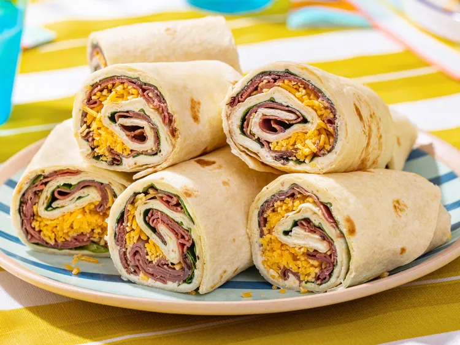

Beef Horseradish Roll-up Recipe

How to make a Beef Horseradish Roll-up
Ingredients
- 2 (8 ounce) packages fat-free cream cheese, softened
- 3 ½ tablespoons prepared horseradish
- 3 tablespoons Dijon mustard
- 12 (12 inch) flour tortillas
- 30 spinach leaves, washed with stems removed
- 1 ½ pounds thinly sliced cooked deli roast beef
- 8 ounces shredded Cheddar cheese
Steps
-
Beat cream cheese, horseradish, and Dijon mustard together in a bowl until combined.
-
Spread a thin layer of cream cheese mixture over each tortilla; evenly arrange spinach leaves on top.
-
Top with 2 slices roast beef, then divide and sprinkle Cheddar cheese on top.
-
Gently roll up tortillas, starting at one end, into tight tubes.
Wrap rolls with aluminum foil or plastic wrap to keep them tight. Refrigerate at least 4 hours.
-
Unwrap rolls as needed; slice into 2 or 3 pieces (or diagonally into 1-inch sections for appetizer portions).
Home